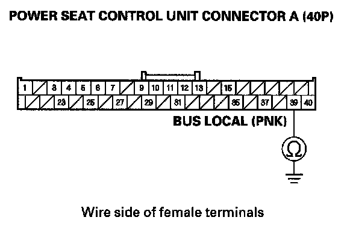

B1843
DTC B1843: Power Seat Control Unit Lost Communication with Power Tilt/Telescopic Steering Control Unit (UART line)NOTE: If you are troubleshooting multiple DTCs, be sure to follow the instructions in B-CAN System Diagnosis Test Mode A.
1. Clear the DTCs with the HDS.
2. Turn the ignition switch OFF, and then back ON (II).
3. Check for DTCs with the HDS.
Is DTC B1843 indicated?
YES - Go to step 4.
NO - Intermittent failure, the system is OK at this time. Check for loose or poor connections.
4. Move the tilt/telescopic steering in each direction with the tilt/telescopic switch.
Does the tilt/telescopic steering move in each direction smoothly?
YES - Go to step 5.
NO - Go to step 10.
5. Turn the ignition switch OFF.
6. Disconnect the power seat control unit connector A (40P).
7. Disconnect power tilt/telescopic control unit connector A (16P).
8. Check for continuity between power seat control unit connector A (40P) terminal No. 39 and power tilt/telescopic control unit connector A (16P) terminal No. 11.
Is there continuity?
YES - Go to step 9.
NO - Repair open in the wire.

9. Check for continuity between power seat control unit connector A (40P) terminal No. 39 and body ground.
Is there continuity?
YES - Repair short in the wire.
NO - Substitute a known-good power tilt/telescopic control unit and recheck. If DTC B1843 is still indicated, replace the power seat control unit.
10. Turn the ignition switch OFF.
11. Disconnect power tilt/telescopic control unit connectors A (16P) and B (8P).
12. Turn the ignition switch ON (II).
13. Measure the voltage between power tilt/telescopic control unit connector A (16P) terminal No. 9 and connector B (8P) terminal No. 1, and between connector A (16P) terminal No. 1 and connector B (8P) terminal No. 1.
Is there battery voltage?
YES - Replace the power tilt/telescopic control unit.
NO - Do the power tilt/telescopic control unit input test.